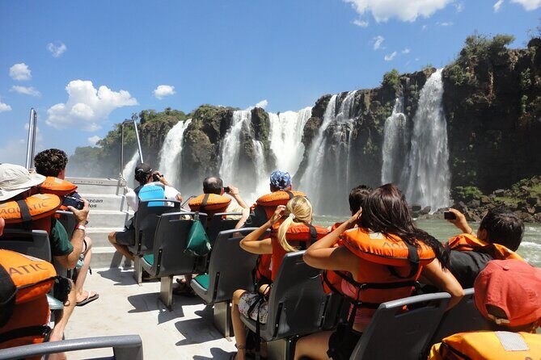
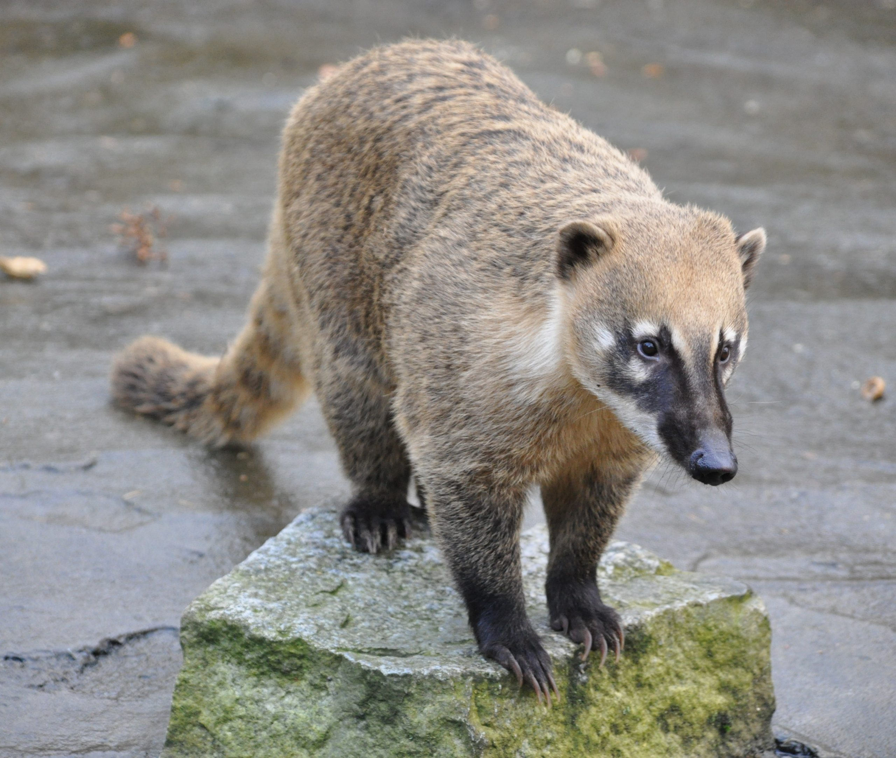

Iguazú Falls was discovered by Spanish explorer Álvar Núñez Cabeza de Vaca in 1541.
Welcome to Iguazú Falls
Geologically speaking, these are part of a massive basaltic overflow from about 130 million years ago.
It’s a "Gueology 101" masterpiece. The falls sit on the edge of the Paraná Plateau, a massive volcanic basalt layer.

And in the last 10 years, climate change has caused extreme "yo-yo" water levels—record droughts followed by massive floods that actually swept away some of the steel walkways in 2022!

Expect a "wall of water" experience. You will get wet! The mist from the 275 falls creates a permanent tropical microclimate. Look for the Coatis (raccoon-like animals)—but don't feed them!
Coatis

Coatis are members of the Procyonidae family. That means they are direct cousins to raccoons! You can see the family resemblance in their "mask" markings and their incredibly dexterous "hands.
Look at that snout! It’s highly flexible (it can rotate 60°) and is packed with sensory receptors. They use it like a biological "metal detector" to find grubs and beetles under the forest floor.